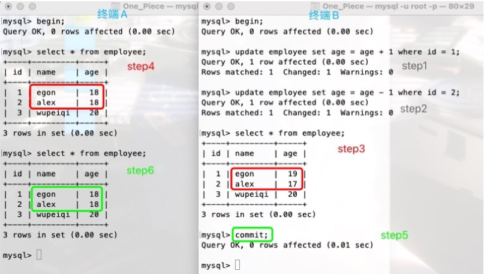
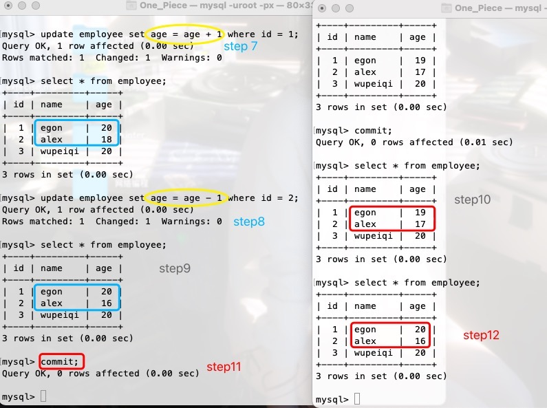

事务
事务是什么¶
transaction 事务是mysql的一种机制,每开启一个事务,都可以往里面放一系列的sql语句..
事务是单个逻辑工作单位执行的一系列的操作,要么全执行,要么全不执行.
每开启一个事务,相当于给数据库拍了一张快照,这意味着在提交之前可以回滚,在事务中可以设置多个保存点,然后可以回滚到每个保存点.结束事务可以用commit或rollback,结束事务会释放事务中所有的锁.
四大特性 ACID¶
经典转账行为 A向B转账100 --- A账户减钱 B账户加钱
step1: selectA账户的余额 if > 100; 500
step2: update A账户 余额 减 100; 500-100
step3: selectB账户的余额; 500
step4: update B账户 余额 加 100; 600
原子性 Atomicity¶
多条sql语句是不可分割的整体 要么全部执行成,要么都不执行 但凡一条失败 全部回滚 一损俱损
执行到第三步的时候 B的账号突然不可用了(注销了) 那么就需要回滚
一致性 Consistency¶
(原子性和一致性这两点不分家)
转账前 A+B账户余额 == 转账后 A+B账户余额
前后的状态一致
事务开启前余额字段规定为正整数 那么事务结束后得到的字段值不能为负数 前后都要符合字段的约束
隔离性 Isolation¶
多个事务并发执行时, 一个事务的执行不应影响其他事务的执行
即一个事务执行过程中, 不应该受到其它事务的干扰!
要先明白一点: 在A向B转账的整个过程中,只要事务还没有提交(commit),查询A账户和B账户的时候,两个账户里面的钱的数量都不会有变化 事务是对快照进行的操作,真正对数据库的修改是要commit后！！
同时开启了两个事务, 事务1 A向B转账100;事务2 C向B转账200。事务开启,事务1一个快照,事务2一个快照.
事务2先完成了commit提交,这时候数据库里AB的余额分别是300,700.
但事务2的完成对事务1不会有影响,事务1查看快照,查看B账户余额依旧会是500,一系列sql语句执行时.
mysql底层会进行处理(一抹多锁的机制),保证转账结果的准确..
持久性 Durability¶
执行commit后,会将数据写到数据库做持久化保存
三种运行模式¶
显示 -- 手动 ; 隐式 -- 自动.
隐式开启,隐式提交¶
mysql默认每执行一条sql语句都会开一个事务,在执行完sql语句后,事务会自动隐式执行commit操作.
如果出现错误,则进行事务回滚至之前状态.
显式开启、显式提交¶
需要自己写start transaction; |begin;和commit; |rollback; , 将要执行的sql语句放在自己手动开启的事务里..
切记要commit提交事务或rollback回滚事务,不然一系列的操作,操作的是快照而不是真正的数据！！
注意: 这种方式在我们使用commit或者rollback后,事务就结束了.再次进入事务状态需要再次start transaction.
-- 准备数据
create table tr(id int,name varchar(10),age int);
desc tr;
insert into tr values (1,'小明',18),(2,'小红',16);
select * from tr;
+------+--------+------+
| id | name | age |
+------+--------+------+
| 1 | 小明 | 18|
| 2 | 小红 | 16|
+------+--------+------+
-- 开始实验
mysql> begin; -- 显示开启事务
mysql> update tr set name='小晓' where id = 1; -- 改了 改的是快照
mysql> select * from tr;
+------+--------+------+
| id | name | age |
+------+--------+------+
| 1 | 小晓 | 18|
| 2 | 小红 | 16|
+------+--------+------+
mysql> rollback; -- rollback不提交快照 commit提交快照. 但rollback和commit都会结束事务.
mysql> select * from tr; -- 不能说回来了,应该说快照从来没有提交过...
+------+--------+------+
| id | name | age |
+------+--------+------+
| 1 | 小明 | 18|
| 2 | 小红 | 16|
+------+--------+------+
mysql> update tr set name='小川' where id = 1; -- 隐式开启隐式提交 自动commit 数据已经写入了硬盘.
mysql> rollback; -- rollback没用 事务已经被自动commit了 没有事务拿来回滚..
mysql> select * from tr;
+------+--------+------+
| id | name | age |
+------+--------+------+
| 1 | 小川 | 18|
| 2 | 小红 | 16|
+------+--------+------+
隐式开启,显示提交¶
mysql帮忙自动开启事务,但是提交和回滚归我自己管.
-- mysql通过关闭自动提交事务,来达到隐式开启事务,显示提交事务的目的..
set session autocommit = 0; -- 0是关闭,1是开启;session是设置当前会话变量,global是设置全局变量.
实验¶
验证一致性、原子性、隔离性
准备数据¶
create table employee(
id int primary key auto_increment,
name varchar(20) not null,
age int(3) unsigned not null default 20
);
insert into employee(name) values
('egon'),
('alex'),
('wupeiqi');
update employee set age = 18 where id <=2;
select * from employee;
+----+---------+-----+
| id | name | age |
+----+---------+-----+
| 1 | egon | 18 |
| 2 | alex | 18 |
| 3 | wupeiqi | 20 |
+----+---------+-----+
开始实验¶
两边同时开启事务 update语句中 age = age + 1,右边的age是会去原表中读数据的,update操作的是快照！
开了两个终端A和B,同时begin开启了事务. B执行了两条update语句.
看step3和step4, 在B提交事务前对事务A没有影响,
看step5和step6, 在B提交事务后对事务A依旧没有影响, 这就是 隔离性！！

继续进行step7,A将id为1的用户的年龄增加了1,结果与step6相比,会发现egon的年龄从18到了20！！
这是因为age = age + 1,虽然操作的是快照,但是为了 一致性 ,右边的age是会去读原表里的数据的！！
step8同理,继续往后,A事务提交前,step10的结果再次验证了 隔离性,
step11,A事务提交, 数据写入了硬盘, 持久性！step12, B可以读取到相应数据.

pymysql实现事务处理¶
# pymysql默认是隐式开启事务,显式提交事务
# 以下代码看看就行 实际上在pymysql里只要我不commit,数据就不会真正的更改！！
# 查询不用放到事务里 写操作需要
try:
cursor.execute(sql_1)
cursor.execute(sql_2)
cursor.execute(sql_3)
except Exception as e:
connect.rollback() # 事务回滚
print('事务处理失败', e)
else:
connect.commit() # 这里的commit就是事务提交的意思！！
print('事务处理成功', cursor.rowcount)# 关闭连接
cursor.close()
connect.close()